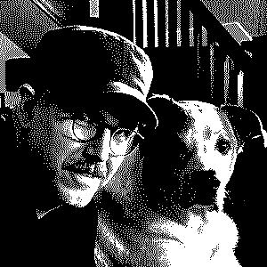

Index
Gate Gate Pāragate Pārasaṃgate Bodhi Svāhā!
- Audio
- Art/Design
- Electronics
Links
About

Emotive. Electro-chemical stimulus response. Cranial plate, bipedal locomotion, endoskeletal. Contiguous external integument.
goes by: Forrest
Gate Gate Pāragate Pārasaṃgate Bodhi Svāhā!

Emotive. Electro-chemical stimulus response. Cranial plate, bipedal locomotion, endoskeletal. Contiguous external integument.
goes by: Forrest